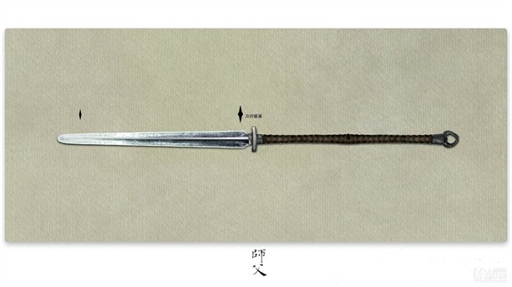
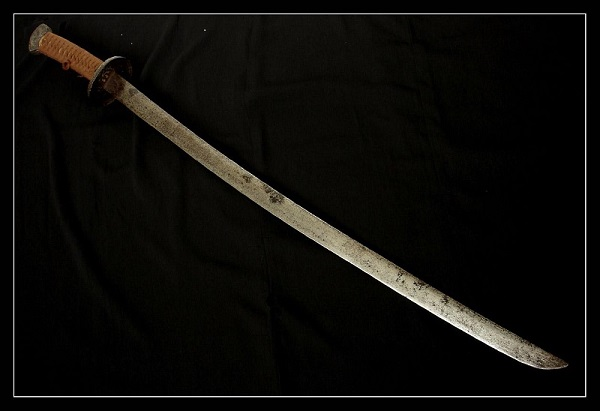
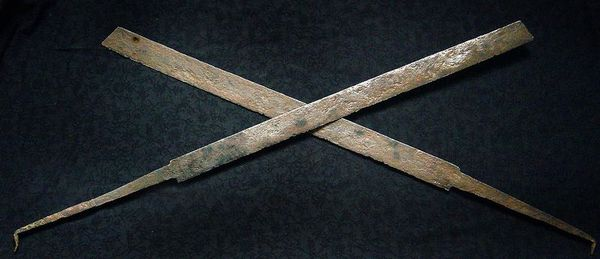
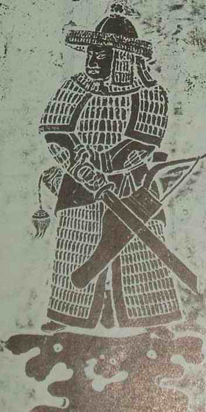

六： 岳飞刀
“岳飞刀”看上去像是一柄长剑加上握柄，其形状类似汉朝的斩马剑或者唐朝时期的陌刀，又被叫做“岳家刀”。

正史中，岳飞的主战兵器是大刀和蛇矛。岳飞视关、张为偶像，在《江东邵辑献书》中记载，岳飞所言“与关、张功烈相仿佛耳”，后期才拜高人陈广习得精湛枪法。根据出土的文物显示，岳飞刀刀身比较平直，刀柄和刀身一样长，乃是宋朝最常见的武器——朴刀的一种。


朴刀与大刀形似，但朴刀是短兵械，比大刀短，且刀身占比例很大。因为宋朝禁止民间拥有长兵器，因此民间习武者把大刀刀柄锯短或加长农具作为兵器，导致形象各异，也没有被记入《武经总要》。
